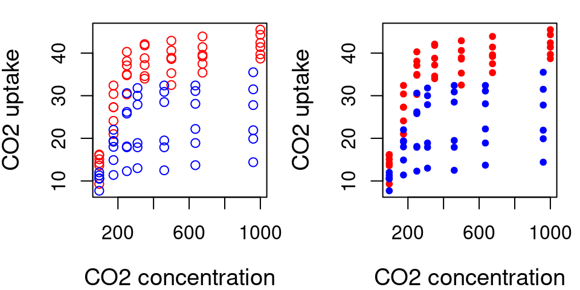

Chapter 26 Syntaxe d’une fonction
function_name <- function(argument1, argument2, ...) {
expression... # Ce que la fonction fait
return(valeur) # Optionnel, pour sortir le résultat de la fonction
}26.1 Arguments d’une fonction
function_name <- function(argument1, argument2, ...) {
expression...
return(valeur)
}Les arguments sont les données fournies en entrée à votre fonction et contiennent l’information nécessaire pour que la fonction opère correctement.
Une fonction peut avoir entre 0 et une infinité d’arguments. Par exemple:
operations <- function(numero_1, numero_2, numero_3) {
resultat <- (numero_1 + numero_2) * numero_3
print(resultat)
}operations(1, 2, 3)## [1] 9Exercice 5
En utilisant ce que vous avez appris précédemment sur le contrôle de flux, créez une fonction print_animal() qui prend un animal comme argument et donne les résultats suivants :
Pitou <- "chien"
Minou <- "chat"
print_animal(Pitou)## [1] "woof"print_animal(Minou)## [1] "miaou"Exercice 5: Solution
Using what you learned previously on flow control, create a function print_animal() that takes an animal as argument and gives the following results:
print_animal <- function(animal) {
if (animal == "chien") {
print("woof")
} else if (animal == "chat") {
print("miaou")
}
}26.2 Valeurs par défaut dans une fonction
Les arguments peuvent aussi être optionnels, auquel cas on peut leur donner une valeur par défaut.
Ceci peut s’avérer utile si on utilise souvent une fonction avec les mêmes paramètres, mais qu’on veut tout de même garder la possibilité de changer leur valeur si nécessaire.
operations <- function(numero_1, numero_2, numero_3 = 3) {
resultat <- (numero_1 + numero_2) * numero_3
print(resultat)
}
operations(1, 2, 3) # est équivalent à## [1] 9operations(1, 2)## [1] 9operations(1, 2, 2) # on peut toujours changer la valeur de numero_3## [1] 626.3 Argument spécial ...
L’argument spécial ... vous permet de passer des arguments à une autre fonction utilisée à l’intérieur de votre fonction. Ici, on utilise ... pour passer des arguments à plot() et points().
plot.CO2 <- function(CO2, ...) {
plot(x = CO2$conc, y = CO2$uptake, type = "n", ...) # On utilise ... pour passer les arguments a plot().
for (i in 1:length(CO2[, 1])) {
if (CO2$Type[i] == "Quebec") {
points(CO2$conc[i], CO2$uptake[i], col = "red", type = "p",
...)
} else if (CO2$Type[i] == "Mississippi") {
points(CO2$conc[i], CO2$uptake[i], col = "blue",
type = "p", ...)
}
}
}plot.CO2(CO2, cex.lab = 1.2, xlab = "CO2 concentration", ylab = "CO2 uptake")plot.CO2(CO2, cex.lab = 1.2, pch = 20, xlab = "CO2 concentration",
ylab = "CO2 uptake")
L’argument spécial ... permet d’entrer un nombre indéfini d’arguments.
sum2 <- function(...) {
args <- list(...)
result <- 0
for (i in args) {
result <- result + i
}
return(result)
}sum2(2, 3)## [1] 5sum2(2, 4, 5, 7688, 1)## [1] 770026.4 Valeurs de retour
La dernière expression évaluée dans une fonction devient la valeur de sortie.
myfun <- function(x) {
if (x < 10) {
0
} else {
10
}
}
myfun(5)## [1] 0myfun(15)## [1] 10function() sort la dernière valeur évaluée, même sans inclure la fonction return().
26.5 Valeurs de retour
Utiliser return() de façon explicite peut être utile si la boucle doit terminer tôt, sortir de la fonction, et sortir une valeur.
simplefun1 <- function(x) {
if (x < 0)
return(x)
}
Un seul objet (ou texte) de retour peut être renvoyé par une fonction. Par contre, ceci n’est pas une limite: on peut renovoyer une liste contenant plusieurs objets.
simplefun2 <- function(x, y) {
z <- x + y
return(list(result = z, x = x, y = y))
}simplefun2(1, 2)## $result
## [1] 3
##
## $x
## [1] 1
##
## $y
## [1] 226.6 Exercice 6
En utilisant vos nouvelles connaissances de fonctions et de structures de contrôle, créez une fonction bigsum() qui prend 2 arguments a et b, et:
- Sort
0si la somme deaetbest strictement inférieure à 50; - Sinon, sort la somme de
aetb.
Exercice 6: Solution
En utilisant vos nouvelles connaissances de fonctions et de structures de contrôle, créez une fonction bigsum() qui prend 2 arguments a et b, et:
- Sort
0si la somme deaetbest strictement inférieure à 50; - Sinon, sort la somme de
aetb.
Solution 1
bigsum <- function(a, b) {
result <- a + b
if (result < 50) {
return(0)
} else {
return(result)
}
}Solution 2
bigsum <- function(a, b) {
result <- a + b
if (result < 50) {
0
} else {
result
}
}